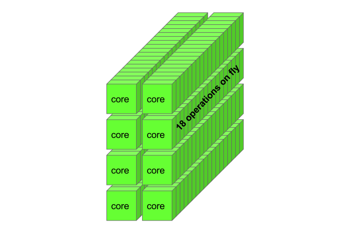

Code GPU with CUDA
Device code optimization principle
Created by Marina Kolpakova (
cuda.geek
) for
Itseez
Outline
- Optimization principle
- Performance limiters
- Little’s law
- TLP & ILP
Device code optimization principle
Specific of SIMT architecture makes GPU to be latent at all, so
Hiding latency is the only GPU-specific optimization principle
- Typical latencies for Kepler generation
- register writeback: ~10 cycles
- L1: ~34 cycles
- Texture L1: ~96 cycles
- L2: ~160 cycles
- Global memory: ~350 cycles
Performance limiters
Optimize for GPU ≃ Optimize for latency
Factors that pervert latency hiding:
- Insufficient parallelism
- Inefficient memory accesses
- Inefficient control flow
Throughput & Latency
- Throughput
- is how many operations are performed in one cycle
- Latency
- is how many cycles pipeline stalls before another dependent operation
- Inventory
- is a number of warps on fly i.e. in execution stage of the pipeline
Little’s law
L
=
λ
×
W
Inventory (L) = Throughput (λ) × Latency (W)

Example: GPU with 8 operations per clock and 18 clock latency
Little’s law: FFMA example
- Fermi GF100
- Throughput: 32 operations per clock (1 warp)
- Latency: ~18 clocks
- Maximum resident warps per SM: 24
- Inventory: 1 * 18 = 18 warps on fly
- Kepler GK110
- Throughput: 128 (if no ILP) operations per clock (4 warps)
- Latency: ~10 clocks
- Maximum resident warps per SM: 64
- Inventory: 4 * 10 = 40 warps on fly
- Maxwell GM204
- Throughput: 128 operations per clock (4 warps)
- Latency: ~6 clocks
- Maximum resident warps per SM: 64
- Inventory: 4 * 6 = 24 warps on fly
TLP & ILP
- Thread Level Parallelism
- enabling factors:
- sufficient number of warps per SM on fly
- limiting factors:
- bad launch configuration
- resource consuming kernels
- poorly parallelized code
- Instruction Level Parallelism
- enabling factors:
- independent instructions per warp
- dual issue capabilities
- limiting Factors:
- structural hazards
- data hazards
Improving TLP
- Occupancy
- is actual number of warps running concurrently on a multiprocessor divided by maximum number
of warps that can be run concurrently by hardware
- Improve occupancy to achieve better TLP
- Modern GPUs can keep up to 64 resident warps belonging to 16(Kepler)/32(Maxwell) blocks BUT you need recourses for them: registers, smem
- Kepler has 64 K. × 32-bit registers and 32-lane wide warp
65536
registers
/ 64
warps
/ 32
warp_size
=
32
registers / thread
Improving ILP
- Kernel unrolling: process more elements by thread, because operations on different elements are independent
__global__ void unrolled(const float* in, float* out )
{
const int tid = blockDim.x * blockIdx.x + threadIdx.x;
const int totalThrads = blockDim.x * gridDim.x;
out[tid] = process(in[tid]);
out[tid + totalThrads] = process(in[tid + totalThrads]);
}
- Device code compiler is not bad in instruction reordering
- Loop unrolling in device code to increase number of independent operations
#pragma unroll CONST_EXPRESSION
for( int i = 0; i < N_ITERATIONS; i++ ) { /* ... */ }
- Other techniques used for increasing ILP on CPU are suitable
ILP on modern GPUs
ILP is a mast-have for older architectures, but still help to hide pipeline latencies on modern GPUs
- Maxwell: 4 warp schedulers dual-issue each. 128 compute cores process up to 4 warps each clock. Compute cores utilization: 1.0
- Kepler: 4 warp schedulers, dual-issue each. 192 compute cores process up to 6 warps each clock.
If there is no ILP only 128 of 192 cores are used. Compute cores utilization: 0.6(6)
- Fermi (sm_21): 2 warp schedulers, dual-issue each. 48 compute cores process 3 warps each 2 clock.
If there is no ILP only 32 of 48 cores are used. Compute cores utilization: 0.6(6)
Final words
- GPU optimization principles:
- Principle #1: hide latency
- Principle #2: see principle #1